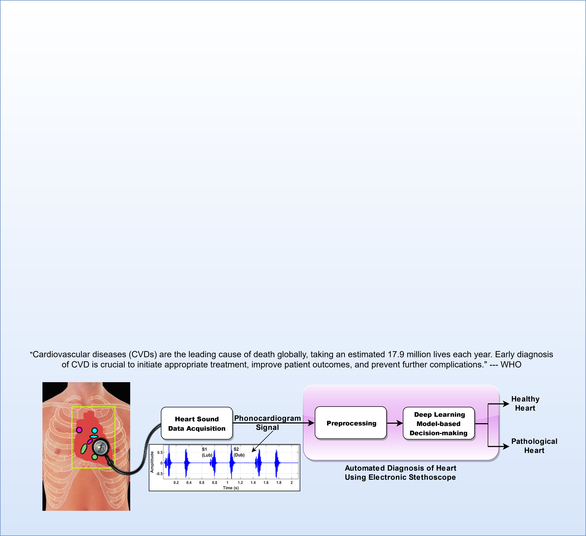

Signals & healthcare
Time-frequency analysis of non-stationary signals, cardiovascular signal processing, and PCG, ECG, and SCG analysis.
Making sense of signals.
Building intelligence that matters.
I work at the intersection of signal processing and machine learning, turning complex, real-world data into meaningful insights. My interests span biomedical signals, deep learning, and agentic AI for autonomous systems.
AI/ML Research Scientist at ABB Corporate Research CenterSeptember 2025 – present · Bengaluru, India
01 / RESEARCH
My Ph.D. at IIT Guwahati explored automated diagnosis of heart valve diseases from phonocardiogram signals using deep learning. Today, I bring that signal-first perspective to industrial intelligence and autonomous systems.
Time-frequency analysis of non-stationary signals, cardiovascular signal processing, and PCG, ECG, and SCG analysis.
Deep learning for detection and classification, laser weld quality monitoring, and process control automation.
Agentic AI, retrieval augmented generation, and the design and development of embedded systems.

Ph.D. thesis, 2017–2023. A framework combining novel phonocardiogram features and machine learning to detect heart valve abnormalities. Mentor: Prof. S. Dandapat, IIT Guwahati.
M.Tech thesis, 2015–2017. Design, development, and experimental validation of an underwater communication system for source detection and localization. Mentor: Dr. SRK Vadali, CSIR-CMERI, Durgapur.
02 / PUBLICATIONS
Peer-reviewed work in biomedical signal processing and deep learning. See Google Scholar for the latest list.
S. Das and S. Dandapat
IEEE Sensors JournalS. Das, D. Joytishi, and S. Dandapat
IEEE Transactions on Instrumentation and MeasurementS. Das, D. Joytishi, and S. Dandapat
IEEE Transactions on Instrumentation and MeasurementS. Das and S. Dandapat
Journal of Acoustic Society of India (JASI)MJ Singh, S. Das, LN Sharma, and S. Dandapat
National Conference on Communications (NCC), GuwahatiS. Das and S. Dandapat
INDICON, KeralaS. Das and S. Dandapat
INDICON, KeralaS. Kumari, D. Jyotishi, S. Das, and S. Dandapat
INDICON, KeralaS. Das and S. Dandapat
National Conference on Communications (NCC), KharagpurS. Das and SRK. Vadali
INDICON, Roorkee03 / THE JOURNEY
2025 – PRESENT
ABB Corporate Research Center · Bengaluru
2024 – 2025
2023 – 2024
2017 – 2023
IIT Guwahati · July 2017 – October 2023
Automated Diagnosis of Heart Valve Diseases From Phonocardiogram Signals Using Deep Learning. EMST Lab, advised by Prof. Samarendra Dandapat.
2015 – 2017
IIEST Shibpur · July 2015 – May 2017
Underwater acoustic pinger system for source localization, with the robotics and automation group at CSIR-CMERI, advised by Dr. Siva Ram Krishina Vadali.
Regression and classification models, technical writing, Microsoft Word, critical thinking, public speaking, and event management.
Linear Algebra, Pattern Recognition and Machine Learning, Biomedical Signal Processing, Digital Signal Processing and Architecture, Probability and Random Process, Mechatronics, Robotics, Embedded Systems, and Micro-electromechanical Systems.
04 / BEYOND RESEARCH
Landscapes, portraits, and the moments in between. Photography is another way I explore the world.
Visit my photography galleryLET'S CONNECT
Academic email: samar176102005@iitg.ac.in